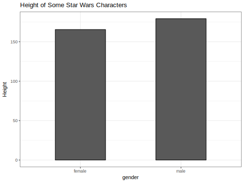
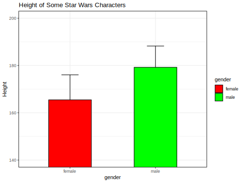
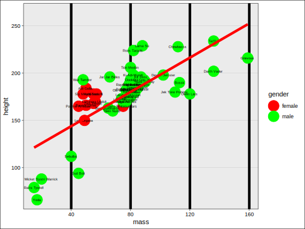
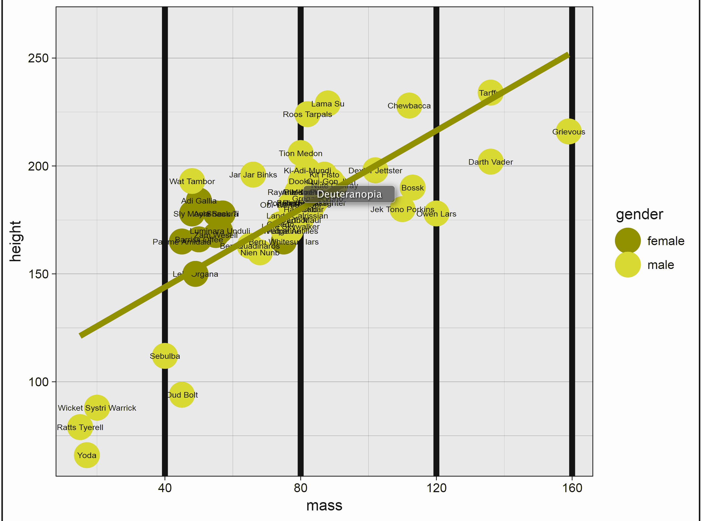
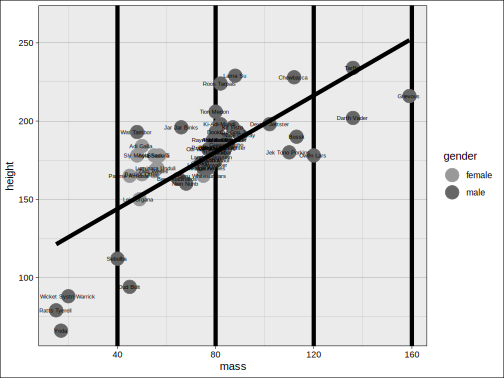
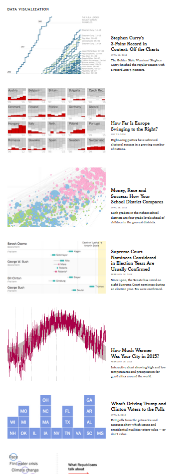

Part II: Visualization
Thinking Visually
Information
A starting point regarding data visualization regards the information you want to display and then how you want to display it. As in statistical modeling, parsimony is the goal, but not at the cost of the more compelling story. We don’t want to waste the time of the audience or be redundant, but we also want to avoid unnecessary clutter, chart junk, and the like.
We’ll start with a couple examples. Consider the following.

So what’s wrong with this? Plenty. Aside from being boring, the entire story can be said with a couple words- males are taller than females (even in the Star Wars universe). There is no reason to have a visualization. And if a simple group difference is the most exciting thing you have to say, not many are going to be interested.
Minor issues include unnecessary border around the bars, unnecessary vertical gridlines, and an unnecessary X axis label.
Even worse.

Now the axis has been changed to distort the difference. Furthermore, color is used but the colors are chosen poorly, add zero information. And finally, the above doesn’t even convey the information people think it does, assuming they are even standard error bars1, which one typically has to guess about in many journal visualizations of this kind.
Now we add more information, but more problems!

The above has unnecessary border, gridlines, and emphasis. The labels, while possibly interesting, do not relate anything useful to the graph, and many are illegible. It imposes a straight (and too wide of a) line on a nonlinear relationship. And finally, color choice is both terrible and tends to draw one’s eye to the female data points. Here is what it looks like to someone with the most common form of colorblindness. If the points were less clumpy on gender, it would be very difficult to distinguish the groups.

And here is what it might look like when printed.

Now consider the following. We have six pieces of information in one graph- name (on hover), homeworld (shape), age (size), gender (color), mass (x), and height (y). The colors are evenly spaced from one another, and so do not draw one’s attention to one group over another. Opacity allows the line to be added and points overlap without loss of information. We technically don’t need a caption, legend or gridlines, because hovering over the data tells us everything we’d want to know about a given data point.
Whether this is something you’d prefer or not, the point is that we get quite a bit of information without being overwhelming, and the data is allowed to express itself cleanly.
Here are some things to keep in mind when creating visualizations for scientific communication.
Your audience isn’t dumb
Assume your audience, which in academia is full of people with advanced degrees or those aspiring to obtain one, can handle more than a bar graph. If the visualization is good and well-explained2, they’ll be fine.
See the data visualization and maps sections of 2016: The Year in Visual Stories and Graphics at the New York Times. Good data visualization can be appreciated by more than an academic audience. Assume you can at least provide visualizations on that level of complexity and be fine with your audience.

Clarity is key
Sometimes the clearest message is a complicated one. That’s okay. Make sure your visualization tells the story you think is important, but don’t dumb it down via visualization. People will likely remember the graphic before they’ll remember the table of numbers.
By the same token, don’t needlessly complicate something that is straightforward. Perhaps a scatter plot with some groupwise coloring is enough. That’s fine.
All of this is easier said than done, and there is no right way to do data visualizations. Prepare to experiment.
Avoid clutter
Gridlines, 3d, unnecessary patterning, and chartjunk in general will only detract from the message. As an example, gridlines might even seem necessary, but even faint ones can hinder the pattern recognition you hope will take place, potentially imposing clumps of data that do not exist. In addition, they practically insist on a level of data precision that you simply don’t have. What’s more, with interactivity they literally convey nothing additional, as a simple hover over or click on a data point will reveal the precise values. Use sparingly, if at all.
Color isn’t optional
No modern journal should be a print-first outfit, and if they are, you shouldn’t care to send your work there. The only thing you should be concerned with is how it will look online, because that’s how people will interact with your work first and foremost. That means that color is essentially a requirement for any visualization, so use it well in yours.
Think interactively
I would suggest you start by making the visualization you want to make, with interactivity and anything else you like. You can then reduce as necessary for publication, and keep the fancy one as supplemental, or accessible on your own website.
Color
Until recently, the default color schemes of most visualization packages were poor at best. Thankfully, ggplot2, its imitators and extenders in both the R world and beyond have made it much easier to have a decent color scheme by default.
Finally, the grey background creates a continuous field of colour which ensures that the plot is perceived as a single visual entity.
Viridis
RColorBrewer
Contrast
WebAxe
Error bars for group means can overlap and still be statistically different (the test regards the difference in means). Furthermore most visuals of this sort don’t bother to say whether it is standard deviation, standard error, or 2*standard error, or even something else.↩
People seem to think there are text limits for captions. There are none.↩